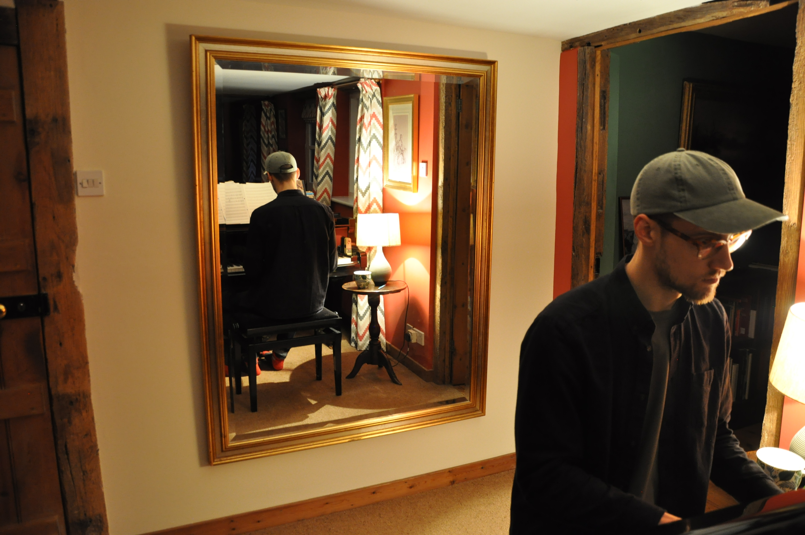

Channeling Events
During events, I connect with my spirit guides and invite them to share messages with the group. People are also welcome to ask my guides questions that can help them with their personal growth.
My Story
I’m originally from Sweden, and my path began through music and sports — especially martial arts, with a focus on judo. My deep connection to music led me to play both drums and piano, as well as compose.
Over time, these interests took me around the world. I lived in different countries and experienced a wide range of perspectives on life, discipline, and personal growth.
Through these experiences, I began to explore a deeper layer of understanding — one centered around intuition, self-awareness, and how we find direction from within.

After having a big spiritual experience whilst on tour in Asia, I realized that I wanted to follow a different calling. I moved back to Sweden and started building a business that focuses on helping people move forward in life with Spirit as their ally and supporter.
I am now dedicating my work to helping others find their inner truth, which can be the greatest guiding light in our lives.
In my upcoming book, Finding Your Inner Light, I share my story—the journey of becoming the version of myself I always felt was buried deep within.
I've always found it incredibly fascinating to read other people's stories. In many ways, we're all working through similar challenges, overcoming similar inner blocks of doubt, and learning to dare to become who we truly are meant to be. Stay tuned for updates.
During events, I connect with my spirit guides and invite them to share messages with the group. People are also welcome to ask my guides questions that can help them with their personal growth.
I tune into spirit to bring forward insights relevant to your current situation, life direction, and deeper patterns.
These sessions create clarity around what is present for you — both consciously and beneath the surface — giving you a clearer understanding of where you are and what is unfolding.
We focus on applying and integrating what has emerged into your life.
This includes developing your own intuitive abilities, working through resistance, and building trust in your decisions — so you can move forward with clarity and consistency.
Certification
I am a certified coach, certified by Victor Odo and Aaron Doughty in their 'Soulina Process'.
Book a session